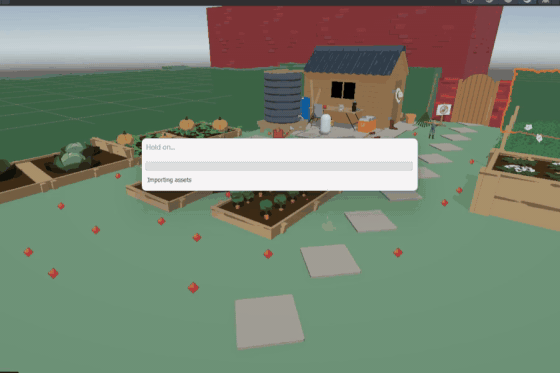
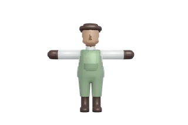

Mijn bijdrage.
De gameplay en systemen die ik voor Vertical Slice: Untitled Goose heb ontwikkeld.


Farmer Walk
Ik heb de Farmer Walk gemaakt met waypoints in de scene. De farmer beweegt automatisch tussen verschillende punten in het level. Hierdoor kan ik makkelijk bepalen welke route hij volgt en hoe snel hij beweegt. Tijdens het lopen wordt de walk-animatie afgespeeld. Bij bepaalde waypoints voert de farmer ook acties uit, zoals graven of harken. Deze acties worden geactiveerd op basis van zijn locatie, waardoor de farmer automatisch de juiste taak uitvoert.
Codefragmenten
Movement.cs — Waypoint Movement
private void Update()
{
if (isWorking)
{
farmerAnimation.SetMoving(false);
return;
}
Vector3 direction = target.position - transform.position;
if (direction.magnitude > 0.4f)
{
farmerAnimation.SetMoving(true);
transform.Translate(
direction.normalized * _speed * Time.deltaTime,
Space.World
);
direction.y = 0;
if (direction.sqrMagnitude > 0.001f)
{
Quaternion targetRotation =
Quaternion.LookRotation(direction);
transform.rotation = Quaternion.Slerp(
transform.rotation,
targetRotation,
5f * Time.deltaTime
);
}
}
else
{
farmerAnimation.SetMoving(false);
StartTaskWayPoint();
}
}Movement.cs — Task System
void StartTaskWayPoint()
{
WaypointTask waypointTask =
target.GetComponent<WaypointTask>();
if (waypointTask == null ||
waypointTask.taskType == FarmerTask.None)
{
GetNextWayPoint();
return;
}
if (waypointTask.taskType == FarmerTask.Digging)
{
currentTask = new DiggingTask();
}
else if (waypointTask.taskType == FarmerTask.Rake)
{
currentTask = new RakeTask();
}
farmerAnimation.PlayTaskAnimation(currentTask.TaskType);
isWorking = true;
Invoke(nameof(FinishTask), 5f);
}
void FinishTask()
{
farmerAnimation.StopTaskAnimation();
isWorking = false;
currentTask = null;
GetNextWayPoint();
}
void GetNextWayPoint()
{
wavePointIndex++;
if (wavePointIndex >= wayPoints.Points.Count)
{
wavePointIndex = 0;
}
target = wayPoints.Points[wavePointIndex];
}FarmerAnimation.cs — Animation Control
public void SetMoving(bool moving)
{
animator.SetBool("IsMoving", moving);
}
public void PlayTaskAnimation(FarmerTask task)
{
animator.SetBool("IsMoving", false);
animator.SetBool("IsWorking", true);
animator.SetBool(
"IsRaking",
task == FarmerTask.Rake
);
animator.SetBool(
"IsDigging",
task == FarmerTask.Digging
);
}
public void StopTaskAnimation()
{
animator.SetBool("IsWorking", false);
animator.SetBool("IsRaking", false);
animator.SetBool("IsDigging", false);
}